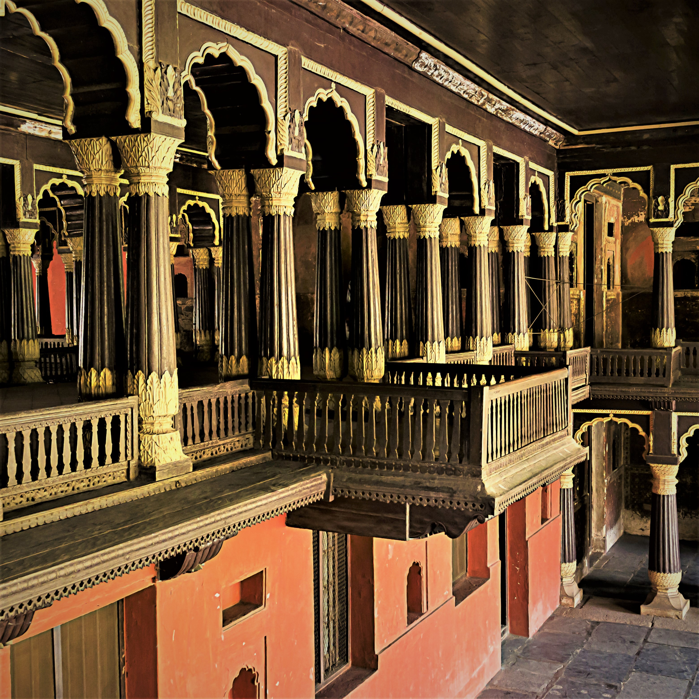
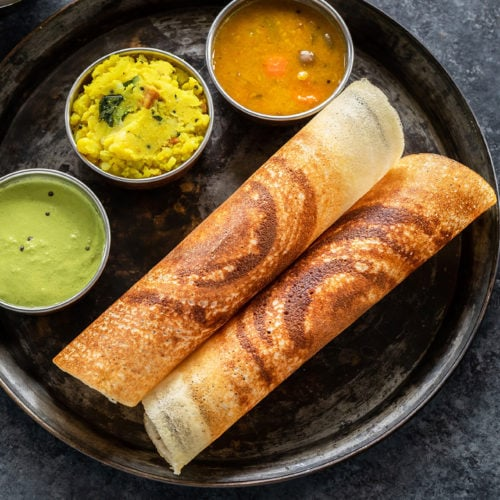
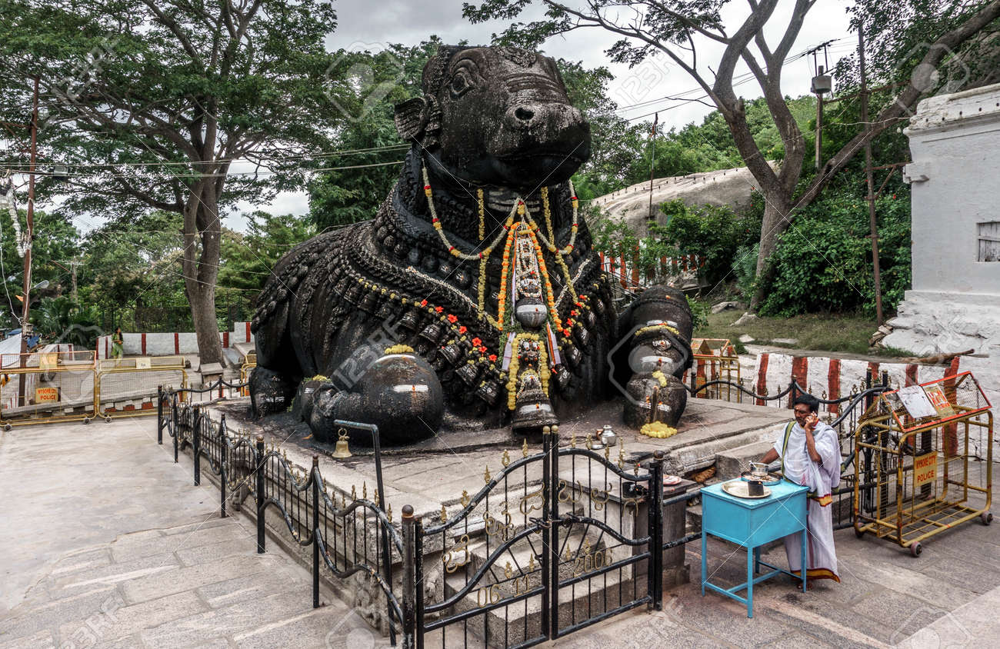
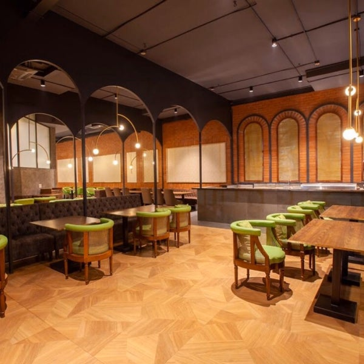

MORNING
Start your day with a visit to the Bangalore Palace

The Bangalore Palace was the private residence of the royal Wodeyar family. Built to resemble Windsor Castle, this quirky palace is filled with an interesting and eclectic collection of art and paraphernalia from a bygone era. The palace grounds are a popular venue for rock concerts and other music events.
Head to Tipu Sultan's Summer Palace to learn about the history of the city

About Tipu Sultan's Summer Palace:
Tipu Sultan’s Summer Palace in Srirangapatna, also referred to as Dariya Daulat Bagh was being used as summer retreat by former Mysuru ruler, Tipu Sultan. Tipu Sultan’s summer palace was built during 1778-1784 AD. Construction of the palace was initiated by Hyder Ali (Tipu Sultan’s father) and completed by Tipu Sultan. Tipu Sultan’s Summer Palace has two stories, built with wood, mortar, stone and plaster. Huge garden area surrounds the palace. Interiors are well decorated with floral motifs and paintings showcasing historic events and battles. Tipu Sultan’s burial grounds are also nearby.
Museum:
Tipu Sultan’s Summer Palace also houses a museum, showcasing artifacts used by Tipu Sultan and his family. Clothes, coins, weapons, silver utensils and crowns used by Tipu Sultan and Hyder Ali are showcased here. Several paintings portraying key people and historic events, including a 200 years old oil painting showcasing storming of Srirangapatna can be seen in the museum.
Timings:
Tipu Sultan’s Summer Palace in Srirangapatna is open between 8.30 AM and 5.30 PM on all days.
Nearby:
Ranganathittu Bird Sanctuary (6 kms), Tipu Sultan’s summer palace (1 km), Ranganatha Temple (1 km), Nimishamba temple (3.4 kms) are some of the spots to visit in and around Srirangapatna along with Jama Masjid.
How to reach:
Srirangapatna is 135 kms from Bengaluru city and 14 kms from Mysuru (the nearest airport). Srirangapatna has a railway station and excellent bus connectivity from Bengaluru and Mysuru.
AFTERNOON
Have lunch at a local restaurant. Try some authentic South Indian cuisine.

Some Must Try South indian Cuisines Restraunts in Banglore :
- Mavalli Tiffin Room (MTR)
- Mudde Madappa Mess
- The Coorg Food Co.
- Thalessary Restaurant
- Ente Keralam
Visit the Lalbagh Botanical Garden, a historic botanical garden with a stunning glasshouse.

About Lalbagh:
Hyder Ali commissioned the building of this garden in 1760, but his son, Tipu Sultan, completed it. A Bagh is Hindustani for garden while the reference of the prefix Lal is debated and could refer to the colour red due to its original floral composition but Lal also means "beloved". Hyder Ali decided to create this garden on the lines of the Mughal Gardens that were gaining popularity during his time.
Hyder Ali laid out these famous botanical gardens and his son Tipu Sultan added horticultural wealth to them by importing trees and plants from several countries. Hyder and Tipu's Lalbagh gardens were managed by Mohammed Ali and his son Abdul Khader, and were based on design of the Mughal Gardens that once stood at Sira, at a distance of 120 km from Bangalore.
At that time, Sira was the headquarters of the strategically important southernmost Mughal "suba" (province) of the Deccan before the British Raj
EVENING
Explore the Bull Temple in Basavanagudi, dedicated to Nandi, the sacred bull.

History on the Bull Temple
Nandi, meaning ‘joy’ in Sanskrit, is the sacred bull according to Hindu beliefs. Though the Nandi statue appears to be black in color, it was not really the case when it was built. The idol was originally grey in color. But as devotees continuously applied charcoal and oil to the statue, it blackened over the years.
According to a myth, the iron plate on the bull’s head has been placed there by Lord Shiva to stop the idol from growing.
An inscription at the temple states that the Vrishabhavathi River flowing through Western part of Bengaluru has its origins from a spring located beneath the Nandi statue.
Have dinner in the Basavanagudi area, known for its traditional eateries.

Some of the Top Eateries In Basvangudi:
- Shiv Sagar
- Kollapuri's Non Veg
- Sree Krishna Darshini
- Grand Village
- ASHA SWEET CENTER - Gandhi Bazaar